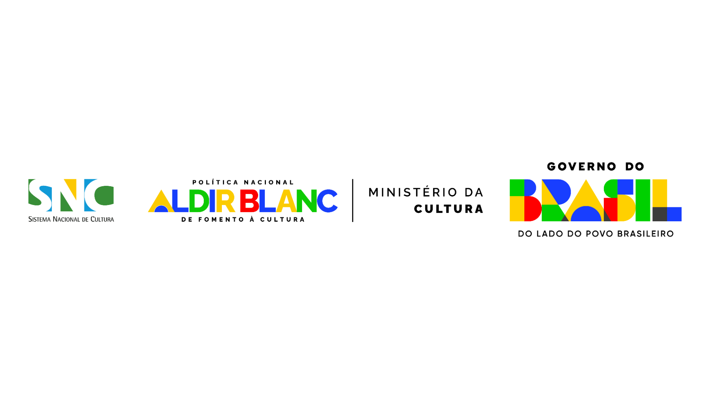

O livro
![Capa do livro Raízes do Sul, de Henrique Guimarães. Pintura de paisagem ao entardecer: à direita, um umbu grande, de copa larga e tronco que se abre em raízes; no céu escuro, a lua crescente e estrelas; no pampa, um cavaleiro, cavalos, um acampamento, um rio com uma canoa e garças, e ao fundo uma serra com araucárias. A terra aparece em corte, com as raízes do umbu descendo por camadas de solo onde há cacos de cerâmica, conchas, pontas de pedra e bolas de boleadeira. No pé da capa, sobre a terra, o título Raízes do Sul e, abaixo, o subtítulo Lendas, contos e doze mil anos de história dos povos originários do sul.](img/capa_frente_874.png)
Lendas, contos e doze mil anos de história dos povos originários do sul do Rio Grande do Sul: Charrua e Minuano, Guarani, Kaingang e Xokleng-Laklãnõ, da arqueologia ao presente das retomadas, com as narrativas atribuídas a quem as contou e falas publicadas de indígenas contemporâneos.
A 1ª edição é digital e gratuita. Escolha o formato:
O PDF reproduz a página do livro (formato A5) e serve para ler no computador e imprimir. O EPUB tem texto que se ajusta à tela do celular ou do leitor digital e é compatível com leitores de tela. Os dois arquivos têm o mesmo conteúdo.
Distribuição gratuita. Permitida a reprodução de trechos com indicação da fonte; proibida a comercialização desta edição.
Sobre o livro
Raízes do Sul reúne, num livro só, o que a pesquisa já sabe e o que os próprios povos originários vêm dizendo sobre a história profunda do sul do Rio Grande do Sul. Em cinco partes e quinze capítulos, o livro percorre os doze mil anos de presença humana que a arqueologia documenta; os povos do pampa, Charrua e Minuano, a violência do século XIX e a retomada contemporânea; os Guarani, da migração antiga às aldeias mbyá de hoje, passando pelas Missões e por Sepé Tiaraju; os Kaingang e os Xokleng-Laklãnõ, povos de língua Jê do planalto e das matas; e o presente das retomadas, dos direitos e das demarcações.
As lendas são recontadas em prosa, sempre com a indicação de quem as contou e de quem as registrou, e três capítulos são construídos com falas publicadas de lideranças, professores, autores e cineastas indígenas contemporâneos. Com glossário e bibliografia, o livro foi escrito para o leitor gaúcho, que nele encontra a parte menos contada da própria identidade, e para o leitor indígena, a quem deve rigor e respeito.
A imagem da capa é uma pintura de paisagem no espírito dos pintores do Rio Grande e do Prata do século XIX, gerada por inteligência artificial sob direção do autor.
Ficha técnica resumida
- Título
- Raízes do Sul: lendas, contos e doze mil anos de história dos povos originários do sul
- Autor
- Henrique Guimarães
- Edição
- 1ª edição. Porto Alegre, outubro de 2026. Distribuição gratuita.
- ISBN
- 978-65-970230-0-4 (edição em PDF)
- Formatos
- PDF (A5) e EPUB 3 (texto refluível)
- Idioma
- Português (Brasil)
- Projeto
- Projeto cultural Raízes do Sul: Pesquisa e Divulgação de Lendas e Contos dos Povos Originários do Sul, contemplado pelo Edital SEDAC/PNAB RS nº 31/2024, Memória e Patrimônio (Termo de Responsabilidade e Compromisso nº 154/2024).
- Proponente
- Amanda de Medeiros Castro, produtora cultural
- Capa
- Imagem gerada por inteligência artificial sob direção de Henrique Guimarães
- Direitos
- © Henrique Guimarães, 2026. Permitida a reprodução de trechos com indicação da fonte; proibida a comercialização desta edição.
A ficha técnica completa, com a equipe conforme o formulário de inscrição do projeto, está no verso da folha de rosto do livro.
Acessibilidade
Livro gratuito em PDF e em EPUB; a versão EPUB é compatível com leitores de tela, com texto real, sumário navegável e estrutura de títulos. O PDF reproduz a página impressa e não é marcado para leitores de tela: quem usa leitor de tela deve preferir o EPUB. As imagens desta publicação têm descrição em texto.
Esta página pode ser lida com leitor de tela, navegada pelo teclado (tecla Tab) e ampliada pelo navegador. Se encontrar uma barreira de acesso, escreva para raizesdosul2025@gmail.com.
Errata viva
Este é um livro digital, e um livro digital pode ser corrigido. Erros de fato, de grafia, de atribuição ou de fonte podem ser enviados para raizesdosul2025@gmail.com. Cada correção incorporada é registrada nas edições seguintes, e os arquivos desta página são substituídos no mesmo endereço, com a data da revisão.
A leitura crítica dos capítulos de vozes vivas por interlocutores indígenas segue o método descrito na Nota metodológica do livro; o que dela vier entra na edição seguinte.
Videocast e entrevistas
O projeto Raízes do Sul inclui um videocast de dez episódios e entrevistas presenciais com representantes dos povos originários, que dependem do tempo e do consentimento de cada comunidade. Os episódios serão publicados neste espaço à medida que ficarem prontos, com legendas e descrição.
- Episódio 1Em produção
- Episódio 2Em produção
- Episódio 3Em produção
- Episódio 4Em produção
- Episódio 5Em produção
- Episódio 6Em produção
- Episódio 7Em produção
- Episódio 8Em produção
- Episódio 9Em produção
- Episódio 10Em produção
Equipe
Proponente e equipe conforme o formulário de inscrição do projeto, como consta na ficha técnica do livro:
- Amanda de Medeiros Castro, produtora cultural proponente
- Henrique do Rosário Guimarães, produtor executivo, coordenador administrativo e escritor
- Leandro Silveira Fleck, pesquisador e escritor
- Bruna Aguiar, assessora de marketing e comunicação
As funções exercidas na execução do projeto estão descritas na Nota metodológica e no posfácio do livro: a pesquisa de fontes teve a coordenação de Bruna Aguiar, com Leandro Fleck; a captação de imagens e o produto em vídeo cabem a Júlio Carissini; a gestão do projeto é de Amanda Castro, sua proponente.
Financiamento
A produção desta obra foi viabilizada com financiamento do PRÓ-CULTURA, Governo do Estado do Rio Grande do Sul, Lei 13.490/2010.
Este livro foi realizado com recursos da Política Nacional Aldir Blanc de Fomento à Cultura (PNAB), do Ministério da Cultura, Governo Federal, por meio do Sistema Pró-Cultura RS e da Secretaria de Estado da Cultura do Rio Grande do Sul (SEDAC).
Financiamento
Realização

Financiamento: PRÓ-CULTURA e Governo do Estado do Rio Grande do Sul, Secretaria da Cultura. Realização: Sistema Nacional de Cultura, Política Nacional Aldir Blanc de Fomento à Cultura, Ministério da Cultura e Governo do Brasil.